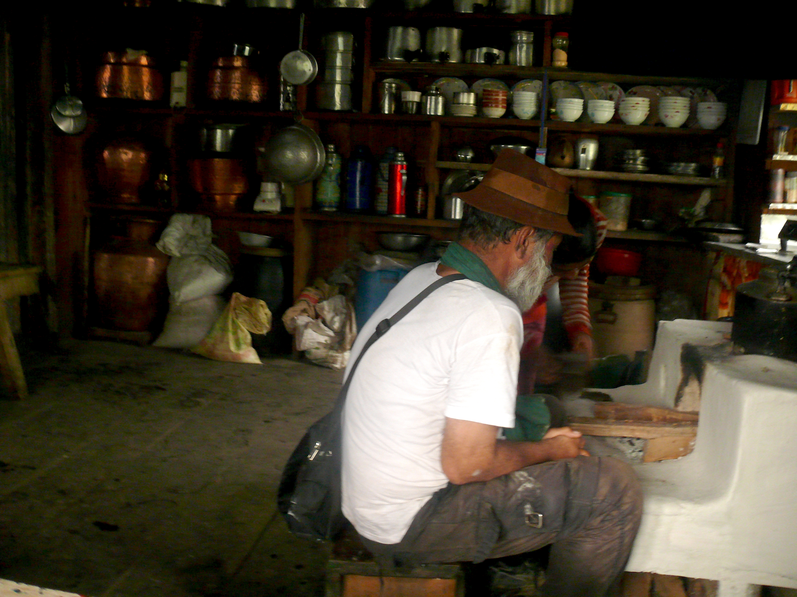
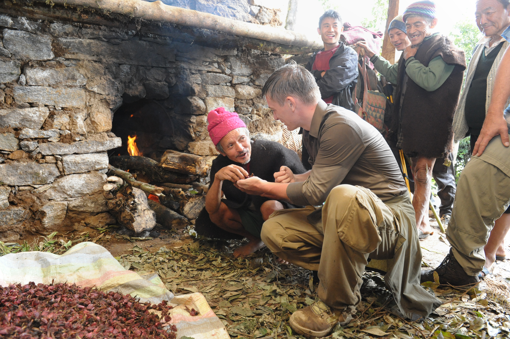

01 — Start here
The story behind
every pod.
Grown in the cool mist of the Nepal hills, cured over wood fire, and carried to your shelf with the story of the people who grew it.
02 — The name
The Name.
Dhuneri (dhoo-NEH-ree). In Limbu tradition, the Dhuneri is the sacred hearth at the centre of every home, where a small offering of food is placed each day in gratitude before the family eats.
Black cardamom is cured over wood fire. When a pod reaches your kitchen, those two hearths meet: the farmer’s and yours.
“Food that was thanked before it reached you.”Follow the journey

WHAT THE NAME CARRIES
Transformation
The hearth is where fire changes food — and where the pod receives its smoke. The transformation is part of the name’s story.
03 — Follow the journey
Land, people
and craft.
Black cardamom’s story begins in Nepal’s hills. Explore the place, the people and the work behind every pod.
04 — The crop
A spice rooted
in Nepal’s hills.
Black cardamom, locally known as alaichi in Nepal, is an aromatic spice derived from the dried fruit capsules of Amomum subulatum.
Taplejung Terroir: Glacial air beneath Mt. Kanchenjunga yields dense, resinous pods with penetrating camphor depth and wild herbal strength.
Behind every pod lies more than its distinctive flavour; it reflects generations of local knowledge, skilled hands, and careful craftsmanship, from tending the plants to harvesting and drying the capsules.
From the heart of Nepal’s hills to the heart of your kitchen.
Explore the land05 — Why it matters
Nepal grows the gold.
Someone else mints it.
Large cardamom is grown in Nepal’s eastern hills. Yet much of the crop leaves the country as a raw commodity, while more of its processing and brand value is captured elsewhere.
Grown close to the source
Farmers cultivate large cardamom in the cool, moist and shaded hills of Nepal. The crop begins with local knowledge and work on the land.
Keep more of the craft, value and identity connected to Nepal — through curing, grading, packing and a named origin.
06 — The craft
What fire brings to the pod.
From hand-picked capsules to the traditional bhatti, the craft behind black cardamom is a story of time, heat and care.
Explore the craft
07 — Return when ready
Stay near
the hearth.
One Field Dispatch a month: new research, field notes, and the next verified finding.